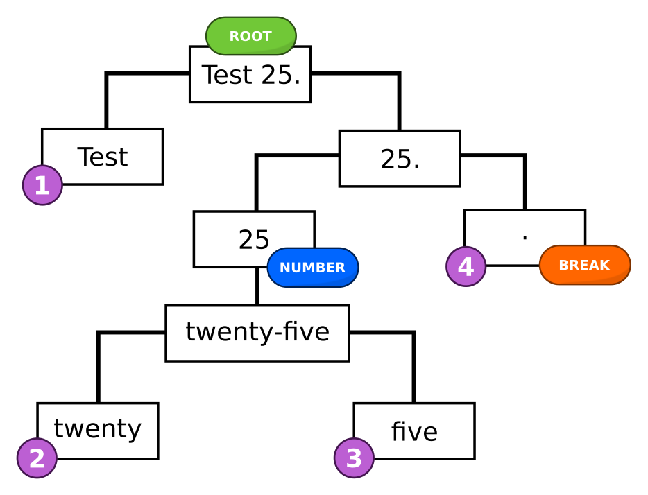

gruut¶
A tokenizer and IPA phonemizer for multiple human languages.
from gruut import sentences
text = 'He wound it around the wound, saying "I read it was $10 to read."'
for sent in sentences(text, lang="en-us"):
if word.phonemes:
print(word.text, *word.phonemes)
Output:
He h ˈi
wound w ˈaʊ n d
it ˈɪ t
around ɚ ˈaʊ n d
the ð ə
wound w ˈu n d
, |
saying s ˈeɪ ɪ ŋ
I ˈaɪ
read ɹ ˈɛ d
it ˈɪ t
was w ə z
ten t ˈɛ n
dollars d ˈɑ l ɚ z
to t ə
read ɹ ˈi d
. ‖
Note that “wound” and “read” have different pronunciations in different (grammatical) contexts.
A subset of SSML is also supported:
from gruut import sentences
ssml_text = """<?xml version="1.0" encoding="ISO-8859-1"?>
<speak version="1.1" xmlns="http://www.w3.org/2001/10/synthesis"
xmlns:xsi="http://www.w3.org/2001/XMLSchema-instance"
xsi:schemaLocation="http://www.w3.org/2001/10/synthesis
http://www.w3.org/TR/speech-synthesis11/synthesis.xsd"
xml:lang="en-US">
<s>Today at 4pm, 2/1/2000.</s>
<s xml:lang="it">Un mese fà, 2/1/2000.</s>
</speak>"""
for sent in sentences(ssml_text, ssml=True):
for word in sent:
if word.phonemes:
print(sent.idx, word.lang, word.text, *word.phonemes)
with the output:
0 en-US Today t ə d ˈeɪ
0 en-US at ˈæ t
0 en-US four f ˈɔ ɹ
0 en-US P p ˈi
0 en-US M ˈɛ m
0 en-US , |
0 en-US February f ˈɛ b j u ˌɛ ɹ i
0 en-US first f ˈɚ s t
0 en-US , |
0 en-US two t ˈu
0 en-US thousand θ ˈaʊ z ə n d
0 en-US . ‖
1 it Un u n
1 it mese ˈm e s e
1 it fà f a
1 it , |
1 it due d j u
1 it gennaio d͡ʒ e n n ˈa j o
1 it duemila d u e ˈm i l a
1 it . ‖
Installation¶
To install gruut with U.S. English support only:
pip install gruut
Additional languages can be added during installation. For example, with French and Italian support:
pip install -f 'https://synesthesiam.github.io/prebuilt-apps/' gruut[fr,it]
The extra pip repo is needed for an updated num2words fork that includes support for more languages.
Supported Languages¶
Arabic (
ar)Czech (
cs)German (
de)English (
en)Spanish (
es)Persian/Farsi (
fa)French (
fr)Italian (
it)Dutch (
nl)Portuguese (
pt)Russian (
ru)Swedish (
sv)Swahili (
sw)
Credit to Michelle K. Hansen (translator) for help with German and French language support.
Usage¶
gruut performs two main functions: tokenization and phonemization.
The gruut.sentences() method does everything for you, including creating a TextProcessor instance for you.
If you need more control, see the language-specific settings in gruut.lang and create a gruut.text_processor.TextProcessor with your custom settings.
Tokenziation operates on text and does the following:
Splits text into words by whitespace
Expands user-defined abbreviations and initialisms (TTS/T.T.S.)
Breaks apart words and sentences further by punctuation (periods, commas, etc.)
Expands numbers, dates, and currency amounts into words (100 -> one hundred)
Predicts part of speech tags (see
gruut.pos)
Once tokenized, phonemization predicts the phonetic pronunciation for each word by:
Looking up each word in an SQLite database or
Guessing the pronunciation with a pre-trained model (see
gruut.g2p)
In cases where more than one pronunciation is possible for a word, the “role” of a word is used to disambiguate. This is normally derived from the word’s part of speech (e.g., gruut:NN), but can be manually set in SSML with <w role=”…”>.
Command-Line¶
gruut tokenization and phonemization can be done externally with a command-line interface.
gruut --language en-us 'This is a test.'
which outputs:
{
"idx": 0,
"text": "More text.",
"text_with_ws": "More text.",
"lang": "en-us",
"voice": "",
"words": [
{
"idx": 0,
"text": "More",
"text_with_ws": "More ",
"sent_idx": 0,
"lang": "en-us",
"voice": "",
"pos": "JJR",
"phonemes": [
"m",
"ˈɔ",
"ɹ"
],
"is_major_break": false,
"is_minor_break": false,
"is_punctuation": false,
"is_break": false,
"is_spoken": true
},
{
"idx": 1,
"text": "text",
"text_with_ws": "text",
"sent_idx": 0,
"lang": "en-us",
"voice": "",
"pos": "NN",
"phonemes": [
"t",
"ˈɛ",
"k",
"s",
"t"
],
"is_major_break": false,
"is_minor_break": false,
"is_punctuation": false,
"is_break": false,
"is_spoken": true
},
{
"idx": 2,
"text": ".",
"text_with_ws": ".",
"sent_idx": 0,
"lang": "en-us",
"voice": "",
"pos": null,
"phonemes": [
"‖"
],
"is_major_break": true,
"is_minor_break": false,
"is_punctuation": false,
"is_break": true,
"is_spoken": false
}
]
}
See gruut --help for more options.
SSML Support¶
A subset of the SSML standard is supported:
<speak>- wrap around SSML textlang- set language for document
<p>- paragraphlang- set language for paragraph
<s>- sentence (disables automatic sentence breaking)lang- set language for sentence
<w>/<token>- word (disables automatic tokenization)lang- set language for wordrole- set word role (see [word roles](#word-roles))
<lang lang="...">- set language inner text<voice name="...">- set voice of inner text<say-as interpret-as="">- force interpretation of inner textinterpret-asone of “spell-out”, “date”, “number”, “time”, or “currency”format- way to format text depending oninterpret-asnumber - one of “cardinal”, “ordinal”, “digits”, “year”
date - string with “d” (cardinal day), “o” (ordinal day), “m” (month), or “y” (year)
<break time="">- Pause for given amount of timetime - seconds (“123s”) or milliseconds (“123ms”)
<sub alias="">- substitutealiasfor inner text<phoneme ph="...">- supply phonemes for inner textph- phonemes for each word of inner text, separated by whitespace
Database¶
Word pronunciations and other metadata are stored in SQLite databases with the following tables:
- word_phonemes - word pronunciations
id INTEGER - primary key
word TEXT - word text
pron_order INTEGER - priority of pronunciation (lowest is first)
phonemes TEXT - whitespace-separated phonemes
role TEXT - role used to disambiguate pronunciations (e.g., “gruut:NN”)
- g2p_alignments - grapheme/phoneme alignments from Phonetisaurus
id INTEGER - primary key
word TEXT - word from lexicon
alignment TEXT - grapheme/phoneme alignment string
You can generate your own lexicon databases from a text file with the format:
word phoneme ...
word phoneme phoneme ...
...
by simply running:
python3 -m gruut.lexicon2db --casing lower --lexicon lexicon.txt --database lexicon.db
If your lexicon has word roles, you can add the --role flag. In this case, your lexicon must have the following format:
word ROLE phoneme ...
word ROLE phoneme phoneme ...
Word roles that do not contain a “:” will be formatted as “gruut:<ROLE>”.
G2P Models¶
Pre-trained g2p (grapheme to phoneme) models are available for all supported languages. These models guess pronunciations for unknown words, and are trained on the included lexicon databases using python-crfsuite.
To train your own model, you will need a lexicon with the format:
word phoneme ...
word phoneme phoneme ...
...
The first step is to use Phonetisaurus to generate an alignment corpus. If you use the phonetisaurus Python package, this can be generated with:
phonetisaurus train --corpus g2p.corpus --model g2p.fst lexicon.txt
The g2p.corpus file contains aligned graphemes and phonemes, and is used to train a g2p CRF model with gruut:
python3 -m gruut.g2p train --corpus g2p.corpus --output g2p/model.crf
You can add the grapheme/phoneme alignments from g2p.corpus to your lexicon database with:
python3 -m gruut.corpus2db --corpus g2p.corpus --output lexicon.db
See gruut.g2p for more details.
POS Taggers¶
Pre-trained pos (part of speech) taggers are available for English and French. These models predict the part of speech for each word during tokenization, and are trained from the Universal Dependencies using python-crfsuite.
To train your own model, first download files in CoNLL-U format from the Universal Dependencies treebanks and install the conllu Python package.
Next, run the training script to generate a CRF model:
python3 -m gruut.pos train --conllu treebank.conllu --output pos/model.crf
You can change the predicted field with --label <FIELD>, which defaults to xpos.
See gruut.pos for more details.
eSpeak Phonemes¶
Most languages include an additional lexicon and pre-trained grapheme to phoneme model with IPA generated from espeak-ng.
from gruut import sentences
for sent in sentences(text, lang="en-us", espeak=True):
for word in sent:
if word.phonemes:
print(word.text, *word.phonemes)
Output:
He h iː
wound w ˈa ʊ n d
it ɪ ɾ
around ɚ ɹ ˈa ʊ n d
the ð ə
wound w ˈuː n d
, |
saying s ˈe ɪ ɪ ŋ
I ˈa ɪ
read ɹ ˈɛ d
it ɪ ɾ
was w ʌ z
ten t ˈɛ n
dollars d ˈɑː l ɚ z
to t ə
read ɹ ˈiː d
. ‖
To generate your own eSpeak lexicon, first gather a list of words in your target language into a text file (one word per line). Next, use the bin/espeak_word.sh script to generate the lexicon:
bin/espeak_word.sh <VOICE> < words.txt > lexicon.txt
where <VOICE> is the voice name you would pass to espeak-ng -v <VOICE>. After generating the lexicon, see the instructions in Database and G2P Models for creating your own lexicon database and g2p models.
Adding a New Language¶
If you’d like to add a new language to gruut, please follow these steps:
- Add an IPA phoneme set to gruut-ipa
I usually follow Wikipedia’s phonology pages
Fewer phonemes is better, as long as you can properly represent word pronunciations
Try to find a Kaldi speech to text model for your language and match its phonemes to IPA
Try running to
espeak-ng -v <VOICE> -q --ipa <TEXT>to see what eSpeak thinks
- Create or adapt an IPA pronunciation lexicon
Check for an existing IPA lexicon from ipa-dict
Try to find a Kaldi speech to text model for your language and use the bin/map_lexicon.py script to re-map phonemes to IPA
Extend wiktionary2dict and create a lexicon from Wiktionary
- Convert your text lexicon to a database by following the instructions in Database
Put in data/<language>/lexicon.db
- Create a grapheme to phoneme (g2p) model by following the instructions in G2P Models
Put in data/<language>/g2p/model.crf
- Edit
lang.pyand: Add your language to
get_settingsand create a function to return appropriateTextProcessorSettings
- Edit
How It Works¶
gruut builds a tree from the input text, and makes many passes over the leaf nodes. The example below shows a tree of the sentence “Test 25.”, which starts as the root of the tree.
In the first pass, “Test 25.” is split by whitespace into “Test” and “25.”. Next, “25.” is split into “25” and “.”, which are then tagged as a number and break respectively. The number 25 is verbalized as “twenty-five” (using num2words). Finally, “twenty-five” is broken apart into “twenty” and “five”. The leaves of the final tree are:
Test
twenty
five
“.” (break)
Most of this process can be configured through TextProcessorSettings. For example, the following properties were used in the example:
split_words- splits text by whitespace normallymajor_breaks- strings that end sentencesis_maybe_number- detects possible numbers to try parsing withbabelword_breaks- strings used to break apart compound words
See the source to process() for details on each pass applied to the tree. gruut will continue refining the tree until either no changes have been made, or a maximum number of passes has been reached. While thorough, this approach is quite slow for large texts.